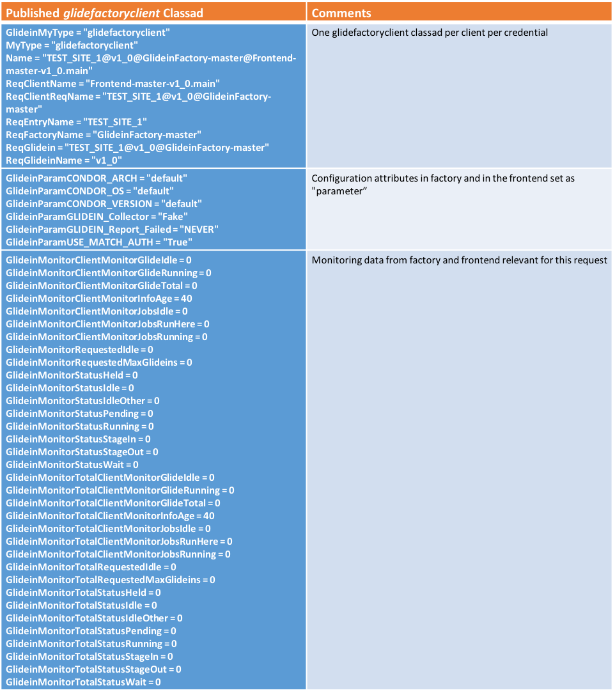
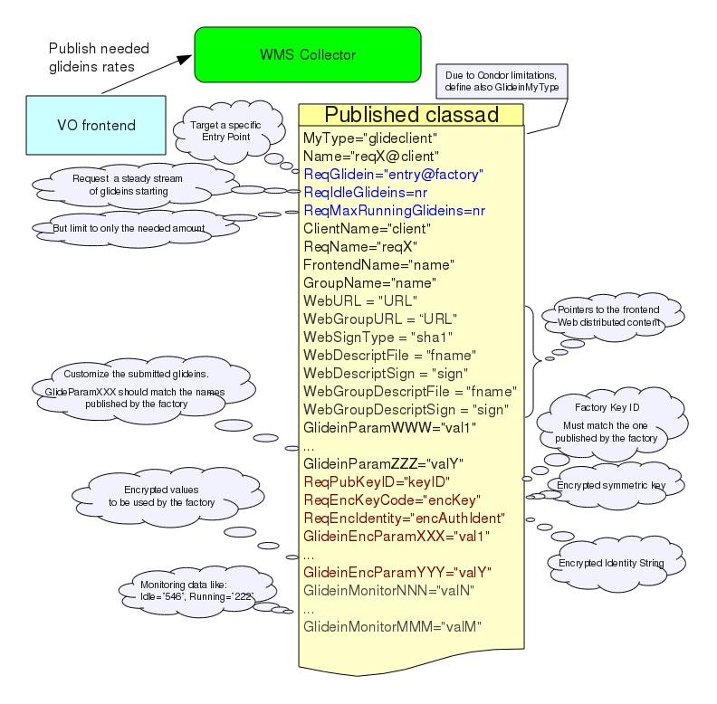
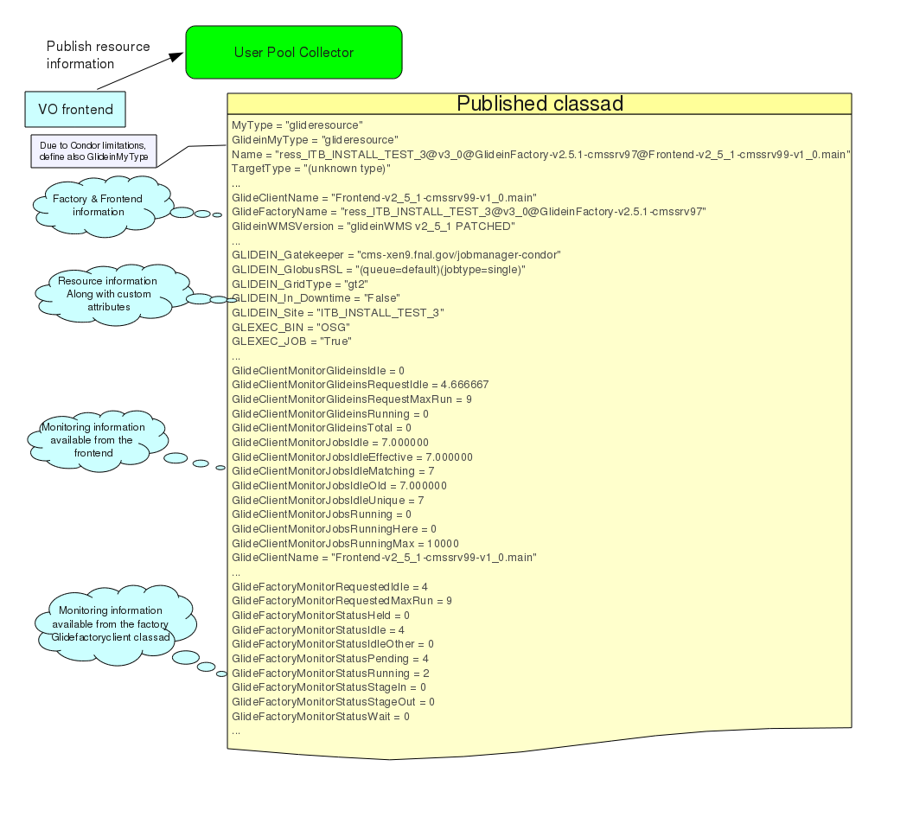

Data exchange overview
In the previous section we described the general architecture of the WMS. Let now have a look at the type of information that the two pieces publish.
See here for a detailed description of the protocol.
The Glidein Factory ClassAd
A Factory publishes one ClassAd per glidein entry. The class-ad contains
- The name of the glidein (and the Factory)
- The attributes that describe the glidein
- The list of parameters that the glidein accepts. All the parameters have also default values associated with them, in case a Frontend does not redefine them, and the (optional) public key algorithm, ID and value, together with the supported symmetric algorithms, that the Frontend can use to push back encrypted values.
- The list of monitoring values (like how many glideins are in the queues, etc)
- Limits configured in the Factory
Look at the picture below for a generic description.
Please
notice that the glidein attributes can be completely arbitrary; the
only predefined attributes are the glidein and Factory name, and the
convention that anything that starts with GlideinParam
is a parameter. Anything that starts with GlideinMonitor
is a monitoring attribute and anything that starts with GlideinConfig is a limit configured in the Factory.
Once the Factory starts
serving frontends, it will publish also another ClassAd for every
Frontend served. This ClassAd contains only monitoring information,
and is not used by the GlideinWMS itself.
Find below a graphical
representation of these ClassAds.

The VO Frontend Class-Ad
A VO Frontend will obtain the list all available glideins and select the ones that fit its needs, based on the published attributes. For each fitting glidein, a Frontend ClassAd will be published. Such a ClassAd will contain
- The name of the Frontend and a request ID
- The desired glidein name
- The (optional) URL and signatures for the Frontend specific scripts and data
- The desired rate and limits of glidein submissions
- The glidein parameters (in clear)
- The (optional) Factory public key ID used, together with:
- The symmetric encryption algorithm and key
- The encrypted identity
- The encrypted parameters
- List of monitoring values (like how many jobs are currently running, etc)
- Limits configured in the Frontend
If encryption is used, the the encrypted identity must must match the AuthenticatedIdentity attribute inserted by the HTCondor collector
Have a look at the picture below for a generic description.

The most important parameters that the VO Fronted sends to the Factory are:
- The address of the User Pool collector(s) - GLIDEIN_Collector.
- The pilot proxies. If present, these are always encrypted. Three types of information are sent:
- Number of proxies sent - nr_x509_proxies
- The proxy identifiers; given an identifier, the proxy DN must not change between updates. - x509_proxy_0_identifier ... x509_proxy_N_identifier
- The security classes; proxies within the same class may have access to one another - x509_proxy_0_security_class ... x509_proxy_N_security_class
- The proxies themselves - x509_proxy_0 ... x509_proxy_N
- The security name associated with the proxies - SecurityName. The Factory uses it for Frontend whitelisting. If present, it is always encrypted.
In the current implementation, the only glidein rate setting parameters supported are ReqIdleGlideins, that tells the Factory how many idle glideins to keep in the queue at any given time, and ReqMaxGlideins, that tells the Factory to stop submitting new glideins when the number of running glidiens raises that level. Future versions may contain more sophisticated controls, like the maximum number of glideins to keep in the queue or the maximum rate at which the glideins should be submitted.
The glideresource ClassAd:
For every Factory entry that accepts requests from the VO Frontend, Frontend will publish glideresource ClassAds to the User Pool Collector. Such a ClassAd will contains
- Information about the Factory and Frontend element served and the downtime status
- Monitoring information from the Factory available in glidefactoryclient ClassAd
- Monitoring information from the Frontend about the glideins and jobs
- Matching information from the Frontend about Factory and job information:
- GlideClientMatchingGlideinCondorExpr: The HTCondor start expression on the glideins to restrict the jobs that start on glideins.
- GlideClientConstraintJobCondorExpr: The HTCondor expression of which jobs to consider for glidein matching.
- GlideClientMatchingInternalPythonExpr: The Python expression that the Frontend uses to determine which Factory entries are acceptable for submission to.
- GlideClientConstraintFactoryCondorExpr: A HTCondor ClassAd expression to determine which Factory entries can be considered.
- Any custom information about the entry that is available through the glidefactory ClassAd that a user can use for match-making purposes
Picture below shows a glideresource ClassAd

New limits and curbs on number of glideins triggered appear in glideresource ClassAd:
To advertize Frontend limits/curbs
Frontend adds the following attributes in glideresource ClassAd about Frontend limits/curbs.
These new attributes in glideresource all start with the prefix "GlideClientLimit" to indicate that this attribute provides information about limit triggered.
examples:
If TotalGlideinsPerEntry on Frontend side is triggered, you will see in glideresource ClassAd
GlideClientLimitTotalGlideinsPerEntry = "count=11, limit=10"
It basically says that "the limit is 10 and the actual count was 11, so the code had to do something about this"
To advertize Factory limits
Factory adds the following attributes in glidefactoryclient ClassAd.
These new attributes in glidefactoryclient all start with 2 prefixes: GlideinMonitorStatus and GlideFactoryLimit.
GlideinMonitorStatus is pre-pended by the Factory code for this attribute to be picked by Frontend code to become attribute of glideresource ClassAd.
The second prefix GlideFactoryLimit indicates that this attribute provides information about a limit triggered.
Examples found in glidefactoryclient:
If TotalGlideinsPerEntry limit is triggered on Factory side, you will see
GlideinMonitorStatus_GlideFactoryLimitTotalGlideinsPerEntry = "count=11, limit=10"
It basically says that "the limit is 10 and the actual count was 11, so the code had to do something about this”
The Frontend code looks at glidefactoryclient, picks up attributes that start with
GlideinMonitorStatus
and converts them to start with
GlideFactoryMonitorStatus.
Examples found in glideresource:
Again, If TotalGlideinsPerEntry limit is triggered on Factory side, you will see
GlideFactoryMonitorStatus_GlideFactoryLimitTotalGlideinsPerEntry = "count=11, limit=10"